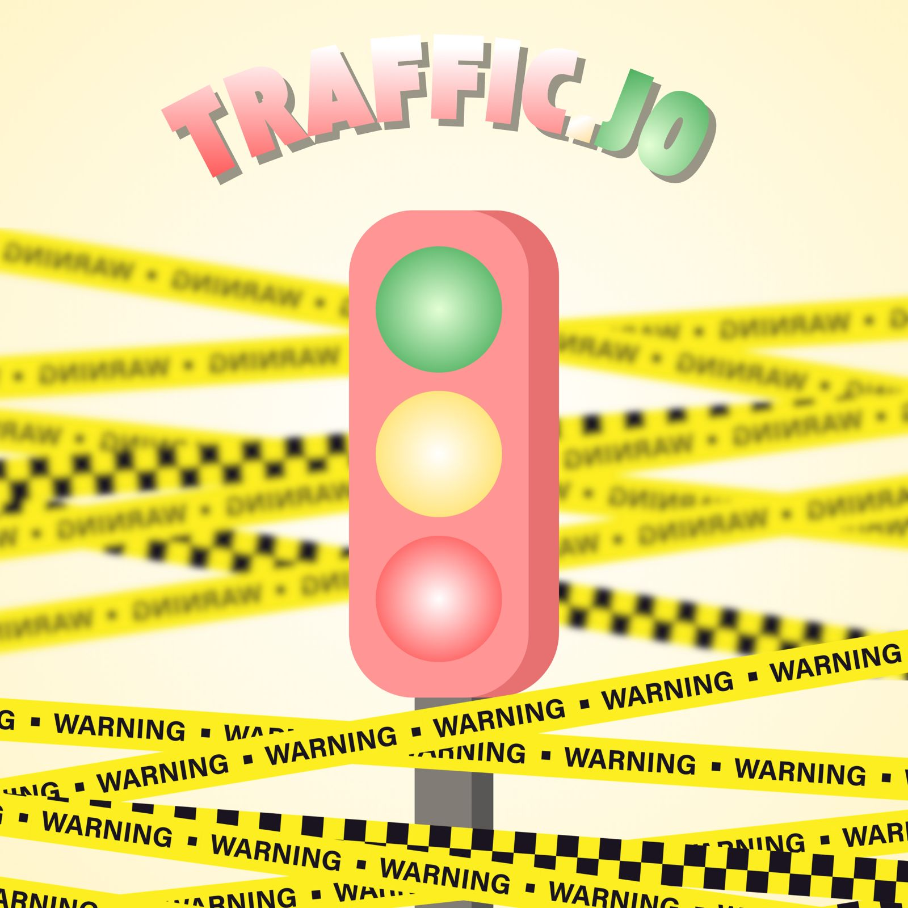

Mengenal JO

JO adalah makanan ringan yang dingin, segar, dan enak. JO hadir untuk memberikan pengalaman menikmati makanan yang menyenangkan bagi semua orang.
Kenali JO lebih dekatPlatform Informasi Terkini

JO adalah makanan ringan yang dingin, segar, dan enak. JO hadir untuk memberikan pengalaman menikmati makanan yang menyenangkan bagi semua orang.
Kenali JO lebih dekat